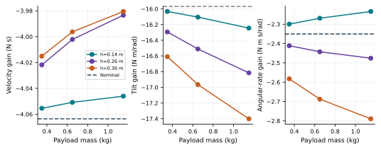
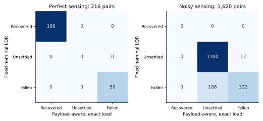
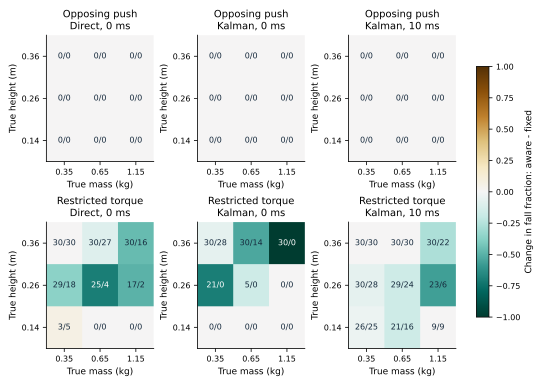
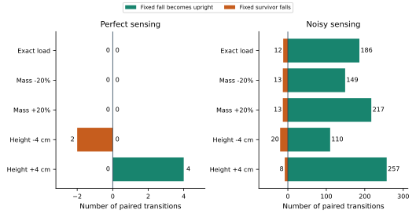
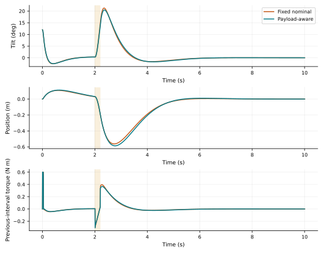

MICHAEL AGBO / CONTROLLER COMPARISON
Payload-aware LQR under sensing uncertainty and load-estimate error
16 development checks. 11,016 reserved test trials. Six figures.
Scope and main result
This study compares the original fixed nominal LQR with a payload-conditioned LQR using exactly the same state and control-effort weights. Gains are designed from an assumed load before each run and remain fixed during the run. No payload estimator or online adaptation is implemented. Six variants are tested on reserved payload/force conditions: fixed gains, exact load, mass underestimated or overestimated by 20%, and height underestimated or overestimated by 4 cm. There are 16 development checks and 11,016 test trials; development results are excluded from the test summaries.
| Design | Ideal recovered | Ideal fallen | Noisy unsettled | Noisy fallen |
|---|---|---|---|---|
| Fixed | 166 | 50 | 1112 | 508 |
| Exact load | 166 | 50 | 1286 | 334 |
| Mass -20% | 166 | 50 | 1248 | 372 |
| Mass +20% | 166 | 50 | 1316 | 304 |
| Height -4 cm | 164 | 52 | 1202 | 418 |
| Height +4 cm | 170 | 46 | 1361 | 259 |
Exact-load redesign leaves every ideal-test outcome unchanged: 166 recoveries and 50 falls. In noisy tests, falls decrease from 508 to 334. Paired inspection reveals 186 prevented falls and 12 introduced falls, giving a net reduction of 174 on this finite grid. None of the noisy runs satisfies the original strict recovery dwell. These are simulation inventories, not estimates of deployment success or proof that payload-aware control is uniformly safer.
Assumption error is not uniformly harmful on this grid. Overestimating height gives fewer falls than exact-load design, while underestimating height introduces more regressions. The original Q/R objective, saturation and sensing imperfections can make a physically exact design suboptimal for the chosen nonlinear finite-horizon outcomes. This post-result observation is not used to retune the design or recommend a favourable bias.
1 Controller construction and comparison contract
The rigid payload model, motor reaction torque, COM-force convention and sensing model are inherited from Steps 3 and 4. True payload parameters always determine plant dynamics. Only the controller gain uses the assumed mass and height. For each assumed payload, the plant is linearised analytically at the upright zero-velocity equilibrium. The continuous algebraic Riccati equation is solved with SciPy [1], retaining Q=diag(12,2,120,2) and R=1. The applied torque is u=clip(-K*xhat, limit), sampled and held at 200 Hz. The true loaded COM is the force application point, irrespective of estimation error.
A^T P + P A - P B R^-1 B^T P + Q = 0; K = R^-1 B^T P
The fixed controller retains the original nominal gain. Zero-payload redesign returns that exact stored gain after a numerical agreement check. The browser uses precomputed CARE solutions at supported settings with exact lookup, not interpolation. The study also includes the exact mismatch settings. All 949 matched designs satisfy the tested CARE residual tolerance and have stable unsaturated, perfect-state sampled linear dynamics. This is not a nonlinear, saturated or delayed-system stability guarantee.
2 Development and reserved test protocol
The tuning budget is zero performance-based parameter searches. Q/R and the Step 3 filter covariance are frozen before execution. Sixteen development runs use the four previously studied loads and the original nominal/large-push conditions; they check implementation only. The new test masses are 0.35, 0.65 and 1.15 kg; heights are 0.14, 0.26 and 0.36 m. None of these mass-height combinations was evaluated in the prior payload grid. These are reserved model conditions, not new hardware or out-of-model physics. The protocol is locally recorded before execution, not externally preregistered.
The ideal test crosses nine loads with initial tilts -12, 0 and 12 deg, forces -15, -7, 7 and 15 N, and torque limits 0.3 and 0.6 N m: 216 conditions per variant and 1,296 total trials. Both force directions are included, with aligned and opposing initial tilts. Mismatch variants change one assumed parameter at a time; true payloads and every disturbance stay paired.
| Scenario | Initial tilt (deg) | Force (N) | Limit (N m) |
|---|---|---|---|
| Opposing push | 7 | -12 | 0.6 |
| Restricted torque | -7 | 12 | 0.3 |
Three sensing profiles use angle-noise SD 0.75 deg and gyro-noise SD 3 deg/s: direct observations at zero delay, Kalman estimates at zero delay, and Kalman estimates at 10 ms delay. Thirty seeds per condition use 5003+104729*i, i=0..29, distinct from prior studies and paired across variants. Nine loads x two scenarios x three profiles x 30 seeds gives 1,620 runs per variant and 9,720 noisy trials. Each run lasts at most 10 s, with a 0.2 s force pulse starting at 2 s. The filter does not predict delayed packets to the present.
3 Outcomes, pairing and statistical scope
The primary outcome is a fall when absolute true tilt reaches 45 deg at a control endpoint. Recovery retains the final continuous one-second dwell within 1 deg tilt, 0.03 m position and 0.03 m/s speed. Upright survivors that miss it are unsettled. Final-second RMS uses all 201 endpoint samples from 9 to 10 s. Torque squared integral is a control-effort measure, not electrical energy. Saturation fraction is saturated control time divided by 10 s for full-duration runs.
Paired outcomes match load, disturbance, torque limit, observer and seed. Continuous comparisons use only pairs where both variants survive for 10 s; this is an explicitly conditional population. Medians and IQR describe the finite paired grid, not confidence in an operational mean. Per-condition fall fractions have Wilson 95% intervals for each variant; no unpaired significance test or pooled deployment probability is reported. Conditions are not independent random draws from a real-world operating distribution, and shared seeds induce dependence across variants.
4 Gain changes at the reserved loads

The redesign changes velocity, tilt and angular-rate gains while retaining the state and torque cost weights. It is a model-based baseline, not a tuned robust controller. The experiment tests whether these gain changes help under the existing saturation and sensing conditions; an affirmative answer in some cells does not establish optimality.
5 Exact-load design: paired outcomes

The perfect-sensing subset shows no change in recovery/fall labels, although continuous responses can differ. In noisy tests, the net benefit hides regressions. The complete trial CSV and paired transition file preserve both directions of change. Persistent sensor noise prevents every noisy trial from meeting the strict recovery dwell, so staying upright cannot be reported as recovery.
6 Where the fall counts change

These maps retain the load geometry, sensing profile and disturbance scenario. A lower overall fall count need not imply improvement in every cell. The 30 seeds per cell give limited resolution for rare failures; zero falls still has a Wilson upper bound of approximately 11.35%. The colour represents an observed paired-grid difference, with no claim that every coloured cell is statistically significant.
7 Sensitivity to incorrect payload estimates

The errors are deliberately structured assumptions, not samples from a calibrated payload estimator. Mass and height errors are tested separately; joint errors, drift, unknown payload shape and off-axis loads are not covered. Gains use the erroneous model while physics retains the true model. The favourable aggregate result for overestimated height is a hypothesis for a future controller-design study, not a parameter selected here using test outcomes.
8 Residual motion, control effort and saturation
![Exact-load redesign minus fixed-gain metric differences, restricted to pairs in which both robots survive the full 10 s. Each point is the median paired difference and each bar the interquartile range, not a confidence interval. n is the number of survivor pairs, pooled descriptively over the listed test conditions; different columns select different survivor populations. Negative values mean a lower metric. Saturation fraction is saturated time / 10 s. This conditional view must be read alongside the fall counts; it does not measure unconditional performance.](../../publication/figures/compare_fig05_paired_metrics.svg)
These differences compare the same surviving condition and noise seed. Selecting only mutual survivors excludes falls and can change which conditions contribute in each profile. Consequently the fall maps and this conditional metric figure answer complementary questions. The broad ranges across pooled conditions should not be read as uncertainty bounds for a universal controller effect.
9 Preselected ideal trajectory

Both designs recover in this example. The curves show how a redesign may alter displacement, tilt and actuator use without changing a discrete outcome. This condition was specified before the test sweep, preventing selection of a visually favourable trajectory after inspecting the results.
10 Verification and practical limits
All 1,296 ideal test records were repeated with two RK4 substeps per control interval while preserving 200 Hz feedback and sensing. 0 outcome labels changed. The audit is a numerical refinement check, not a physical validation or a full stochastic convergence study.
Six preselected ideal trajectories were independently integrated using a component-wise mass matrix and SciPy DOP853, with torque held over each 5 ms interval (rtol=1e-11, atol=1e-13). All selected outcome labels agree. The largest absolute component difference is 3.14e-07, comparing each state component in its SI unit (metres, metres/second, radians or radians/second). This mixed-unit maximum is a numerical discrepancy diagnostic, not a physically meaningful norm. The analytical linearisation also agrees with finite differences of the archived nonlinear model.
Automated checks cover original fixed-controller parity, zero-load equivalence, seeded repeatability, estimate settings, gain lookup and the live comparison controls. UI tests use real Three.js geometry with a mocked renderer. Browser access remains unavailable, so live WebGL pixels were not visually verified. PDF pages and static figures are checked separately. The compact robot-view layout is retained, and changing gains or assumed payload resets a live run.
No independent multibody simulator or hardware validation has been completed. The separate component/solver check reduces implementation risk but shares the same modelling assumptions. Real wheel traction, motor dynamics, calibration error, load attachment compliance, roll, yaw and online pickup remain outside scope. Estimated parameters are supplied to the controller; the system does not learn them. The 54 true-load/variant sampled linear diagnostics have spectral radii between 0.992988 and 0.994232, all below one, but that local perfect-state result does not cover delayed observation or saturation.
Payload-sensitive gain scheduling and observer-based compensation already exist in the literature; Song et al. [2], for example, study a more complex variable-configuration robot with a gain-scheduled robust controller and equilibrium-offset observer in simulation. The present work does not reproduce that method. A publishable contribution needs a precise new claim and external validation, not simply adding another LQR. The present evidence supports a narrower statement: on this reserved simulation grid, fixed-cost payload redesign improves aggregate noisy fall counts while preserving identifiable regressions and sensitivity to parameter assumptions.
Reproduction and next experiment
Run publication/.venv/Scripts/python.exe design_payload_lqr.py; node run_comparison.js --development; node run_comparison.js --test; node audit_comparison.js; publication/.venv/Scripts/python.exe validate_comparison.py; then publication/.venv/Scripts/python.exe publication/build_comparison_report.py. Data and source hashes are in results/comparison. The report has six vector PDF/SVG and 600 dpi PNG figures, a PDF and HTML version, and editable LaTeX (not compiled here). Prior manuscript and Steps 3/4 datasets remain unchanged.
For a follow-up, specify a redesigned cost or delay-aware controller using a separate development set, then create a fresh test set: the present test outcomes are now known. Use a fixed physical force attachment point and an independent multibody or hardware implementation before extending these conclusions to a physical robot. Do not retrospectively promote the favourable height bias into a validated design.
References
[1] SciPy Developers. scipy.linalg.solve_continuous_are. SciPy 1.17 documentation. Source
[2] Y. Song, G. Wan and X. Cao. Gain-Scheduled Control of a Wheeled Inverted-Pendulum Robot with Load-Induced Equilibrium Drift Compensation. Applied Sciences 16(10), 4876 (2026). DOI 10.3390/app16104876. Source